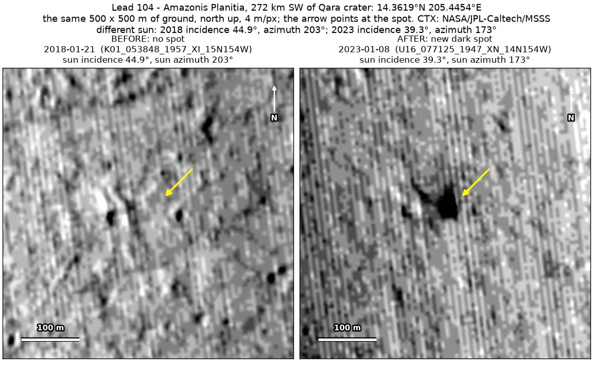
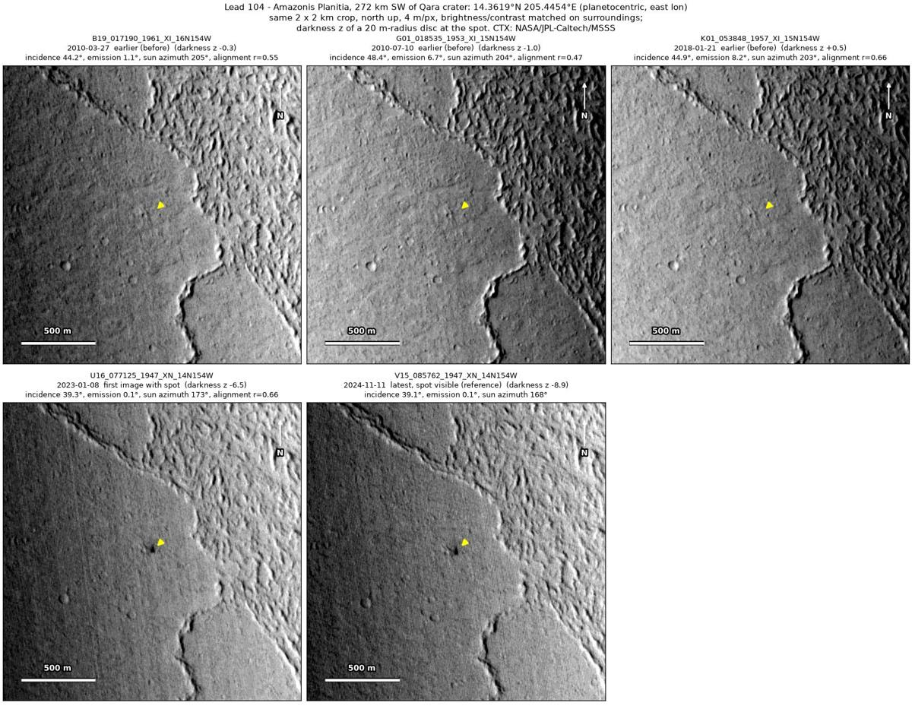
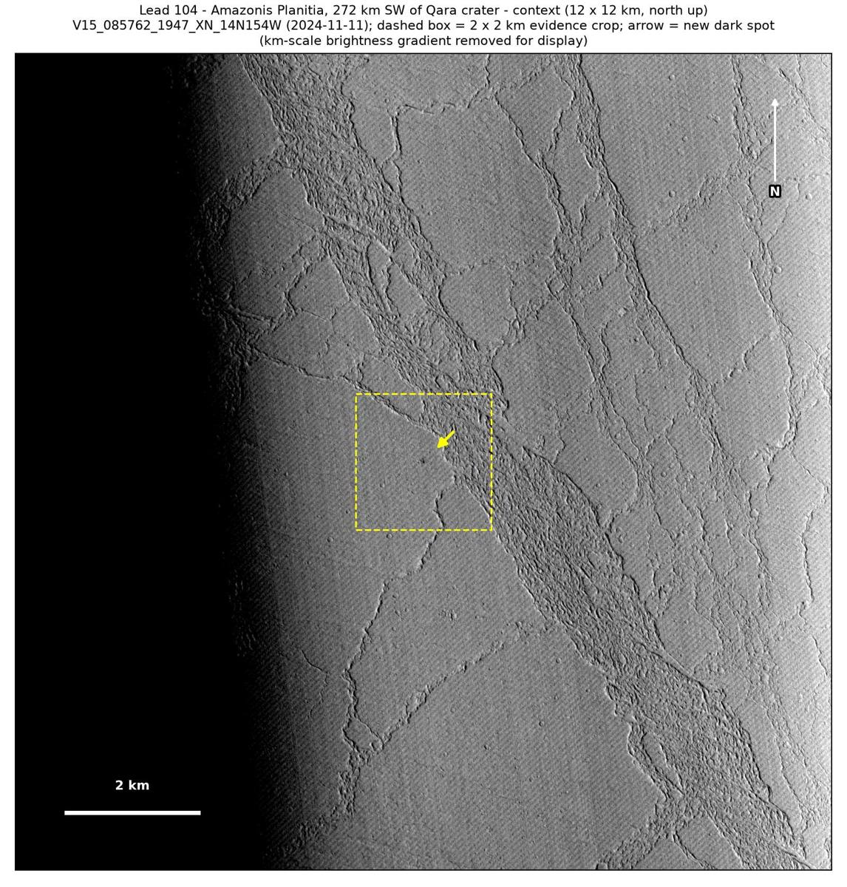

Professor of Mathematics
Paata Ivanisvili
Department of Mathematics, University of California, Irvine

← Possible new impact sites on Mars
Candidate 104: Smooth plains in Amazonis Planitia, 272 km south-west of Qara crater
Strong · roughly 80%

What changed. A compact dark spot about 36 m across appeared on smooth plains in Amazonis Planitia, about 400 m west of the edge of rough, knobby ground, between January 2018 and January 2023. Two CTX images from two orbits show it, the later in November 2024.
Why it may be a new impact. Three earlier images, from 2010 and 2018 and all aligned with the later ones, show no spot there, while small craters 40 m to the west show in all five images. When an earlier image is subtracted from a later one, the strongest change in the surrounding 2 × 2 km is right at the spot, except at the very edge of that area. A compact dark spot, unchanged after 22 months and with no dust-devil tracks near it, is how the blast zone of a small new crater looks.
- Location
- 14.362° N, 205.445° E (154.555° W)
- Absent
- 27 March 2010, 10 July 2010 and 21 January 2018
- Present
- 8 January 2023 and 11 November 2024
- Size
- Compact dark spot about 36 m across (28 × 50 m)
- Confidence
- Strong candidate: roughly 80% likely to be a new impact.
- Caveat
- The earlier images were all taken under a lower sun than the later ones, and a dark mark nearby is only faint in them, so it cannot show that they would have caught the spot. A small hollow that was already there is unlikely, as none shows in the earlier images, whose lower sun would show one better. No image from the high-resolution HiRISE camera covers it; the nearest ends 43.1 km away. Like every candidate here, it is unconfirmed: see the caveat.

